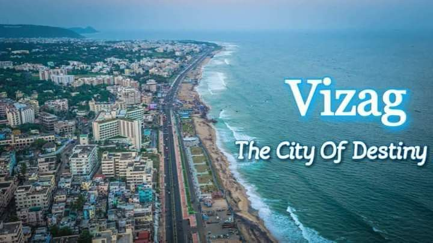

Explore the Beauty of Visakhapatnam
Visakhapatnam, also known as Vizag, is a coastal paradise known for its stunning beaches and rich cultural heritage.
Scroll Down for More
Why I Love Visakhapatnam
Visakhapatnam, often called Vizag, is a captivating coastal city located in the southeastern state of Andhra Pradesh, India. Known as the "Jewel of the East Coast," Vizag seamlessly blends natural beauty, historical significance, and modern development. Here are some highlights of Visakhapatnam and its beauty:
- 🌊 Stunning Beaches: RK Beach, Rushikonda Beach, Yarada Beach, Bheemili Beach.
- 🏞️ Picturesque Hills: Kailasagiri Hill Park, Dolphin's Nose.
- 🏝️ Natural Wonders: Araku Valley, Borra Caves, Kambalakonda Wildlife Sanctuary.
- 🏛️ Rich Heritage: Simhachalam Temple, INS Kursura Submarine Museum, Visakha Museum.
- 🌇 Modern Development: Visakhapatnam Port, IT and Industrial Growth.

Scroll Down for More
Why People Love Vizag
Clean and Green: Well-maintained roads, green spaces, and an overall clean environment.
Pleasant Climate: Mild coastal weather throughout the year.
Warm Hospitality: Friendly people and a vibrant local culture.
Delicious Cuisine: Known for its seafood, Andhra delicacies, and street food.
Scroll Up